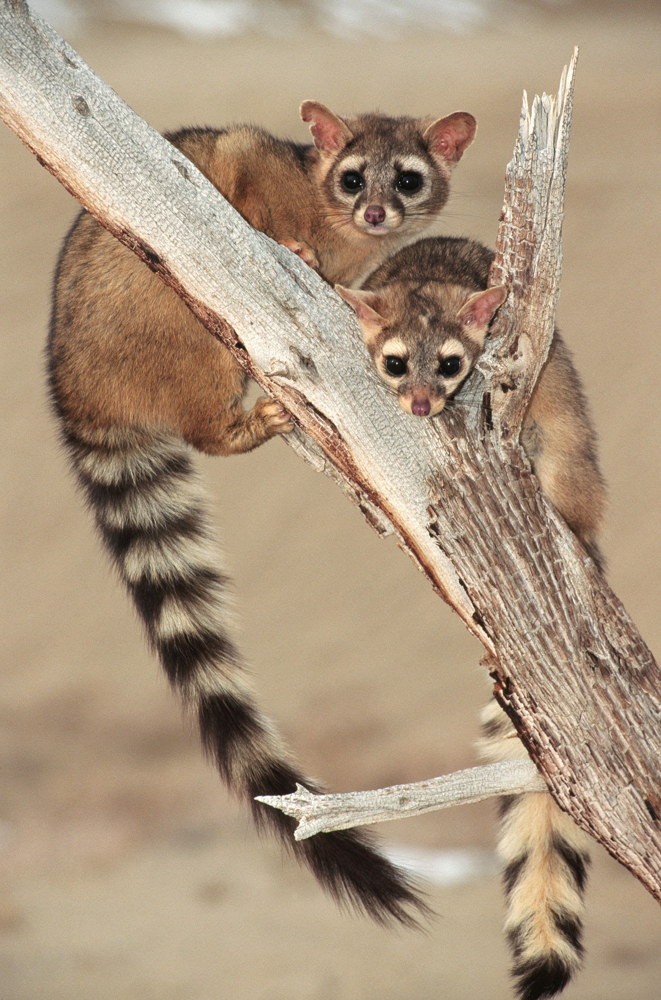

Nombre del proyecto
Mi proyecto es “Crear una reserva especial para el cacomixtle, en la zona norte de la ciudad de México".
¿Qué es el cacomixtle?
El cacomixtle o chiquina(del náhuatl tlacomiztli=mitad gato) es un mamífero de la familia procyonidae del orden carnivora, en esta familia se encuentran incluidos los mapaches y los coatíes. Es un gran trepador de árboles y es bastante ágil, de hábitos nocturnos, se ha adaptado muy bien a la urbanización.
El objetivo principal es hacer conciencia de que el cacomixtle es un animal inofensivo que es maltratado debido a que la carencia de su habitat natural lo obligó a adaptarse a la CDMX y en consecuencia es maltratado por la gente de la ciudad.
